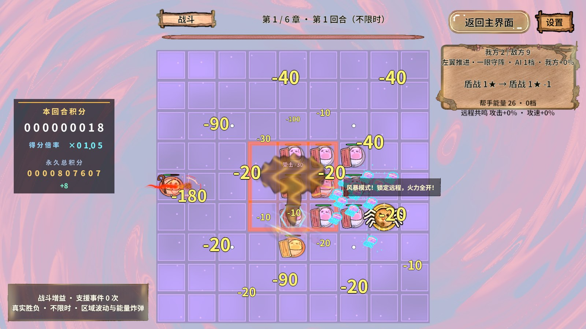
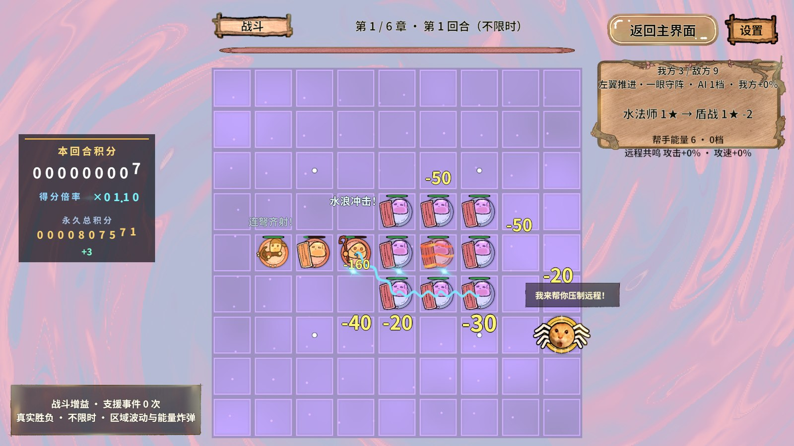
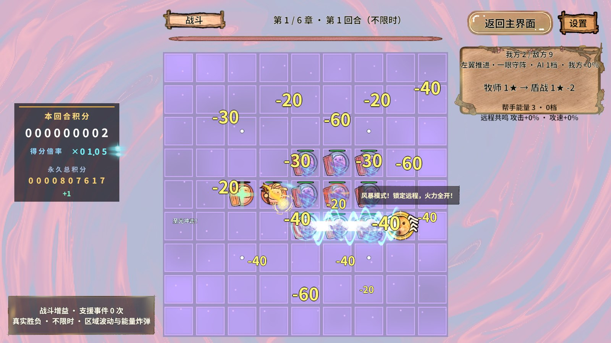

火法师 · 实现已写入
爆燃亮芯、起伏火舌、余烬和冲击环，保留真实3×3范围边界。
新版真实画面尚未采集，未生成或伪造GIF。下图仅为旧版参考，不能作为本轮效果通过的证据。

实现与编译已完成；Unity内存压力及MCP离线导致视觉验收阻塞。先验证真实攻击、材质、关键帧和回收，再说明性能边界。
{
"stage": "failed",
"error": "System.TimeoutException: 等待完整场景交付\r\n at RevGame.Editor.GamePieceAttackVisualChecks.Run (System.Boolean elementalOnly) [0x00144] in D:\\AAAAAAA王者荣耀项目组工作日志\\RevGame\\RevGame_Client\\UnityProject\\RevGame.Unity\\Assets\\Editor\\RevGame\\Balance\\GamePieceAttackVisualChecks.cs:77 ",
"kind": "",
"directory": "Temp/ElementalAttackVerification",
"completed": 0,
"assertions": 1,
"frames": 0,
"cleaned": true,
"maxPatternWrites": 0,
"maxPatternStarts": 0,
"distinctKeyframes": 0
}爆燃亮芯、起伏火舌、余烬和冲击环，保留真实3×3范围边界。
新版真实画面尚未采集，未生成或伪造GIF。下图仅为旧版参考，不能作为本轮效果通过的证据。

加宽水浪、白色浪花与水滴，逐段沿实际连锁轨迹播放。
新版真实画面尚未采集，未生成或伪造GIF。下图仅为旧版参考，不能作为本轮效果通过的证据。

圣光柱、双层法阵和明亮星芒，标记实际获得治疗的友军。
新版真实画面尚未采集，未生成或伪造GIF。下图仅为旧版参考，不能作为本轮效果通过的证据。

| 阶段 | 处理方式 | 上限与所有者 |
|---|---|---|
| 真实出手 | 服务已结算伤害，再发送只含编号和坐标的表现快照。 | 表现不再次扣血或发积分。 |
| 候选等待 | 沿用按来源公平的有界队列，满时不让固定名单前段长期挤掉后来者。 | 棋盘持有81条候选，每来源最多3段。 |
| 资源交付 | 冷加载集中返回也先停放关闭Renderer的池对象，保留预约名额。 | 待启播固定16槽，不在回调内同时显示全部。 |
| 实际启播 | LateUpdate统一从停放队列交付首帧。 | 每帧最多3份，实际计数验证。 |
| 在播推进 | 固定槽位轮询，每次用开始时刻计算应显示的关键帧；相同帧号不重复写参数块。 | 每帧最多推进4份，范围特效不再逐份创建Tween。 |
| 完成/退出 | 先断开旧槽位引用，再回池；退出清空候选、待启播与活动槽位，旧加载回调按代次只归池。 | 总短效仍为16，弹道仍为35，原预算未提高。 |
火焰0.8秒、水浪0.6秒、圣光0.9秒是纯美术寿命，不是攻击冷却或技能时间。离散进度最多18/24个艺术关键帧；低帧时直接跳到正确位置，不补播过期帧，不把效果拖长。
分帧减少同帧CPU启动和参数提交峰值；已经启用的透明Renderer仍参与每帧绘制。不能仅由“每帧推进4份”推出GPU快了多少，也没有宣称全场零GC或手机稳定帧率。
类、字段、方法及生命周期关键步骤均补有中文注释，解释为什么分开预约与活动计数、为什么回收前撤槽、为什么低帧不追补。
全程通过RevMCP/GM及项目接口测试，没有使用电脑控制。截图只证明画面，业务正确性由实际断言决定。
第一次资源构建捕获HLSL保留字冲突：辅助函数参数point无法在DX11编译。已改为position，并在制作检查中增加Shader编译门禁，随后重新构建和发布，资源与映射检查通过；首次失败工单仍保存在忽略目录。
计划采集的截图使用高生命演示靶阵；本轮尚未取得新版画面。该夹具中自动帮手继续运行，因此局部帧可能有帮手弹幕叠加，不作为普通难度胜率或性能计时。旧图只作美术参考，不作相同负载的FPS对照。本轮没有得到有效前台固定负载GPU耗时或手机结果，不借用上一轮失焦数据证明优化。
无ZIP、Profiler录制或内存快照。详细JSON与原始PNG在.codex/work/elemental-vfx-2026-11-01，文档目录只保留HTML和必要JPEG/GIF。旧全量增援首手断言属于既有问题，本次不据专项通过宣称旧全套回归全过。
第一次元素视觉作业等待完整场景交付超过原工具60秒期限，0帧，已自行回大厅。随后runtime.logs记录7条系统内存不足错误，提示物理及分页内存使用约93%；目标Editor进程仍在，但RevMCP心跳停止在2026-11-01 04:10:52，后续发现返回“没有在线Unity桥接”。不存在已启用的HTTP运行期端点可切换。
只为元素专项增加了180秒有限看门狗，保留相同完整交付条件并记录实际入场秒数；这份最新测试代码已离线编译，但因为桥接离线，尚未重新在Unity执行。等待预算不作为加载性能合格线，首次失败没有被覆盖。
现有RevPool、RevEvent、资源引用与异步代次契约足以承载更强的元素表现。项目补充固定预算的视图调度和共享材质配方即可；未修改Assets/Revolution快照，也没有另建资源加载或通信系统。